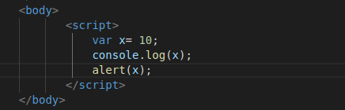

It can start with $, _ or letters
Can't include special characters
Can use numbers
Task 1/2: Create a variable and alert it on web page
Sol :
 
Task 2/2: Create an input field,a paragraph with some text and a button. Input some text in input field and on click of that button the content get updated
Sol :

Note use typeof to determine the datatype
For ex : typeof 10 //Output will be number
- var a="hello"
- typeof a //Output will be string
Note To find the length of string
For ex : "helloworld".length //Output will 10
Note Convert to integer
For ex : var a="25";
If we convert a string say "hello" to int then it will display NaN i.e Not a Number
var a=NaN;
var b=2;
car c= a+b; //Output is Nan
var a=NaN;
var b="2";
car c= a+b; //Output is Nan2
isNaN(Var_name) //returns true if Var_name= NaN
Note Convert to string
For ex : var a=25;
We can also pass argument in toString func
For ex : var a=10;- var age = a.toString(2); //Output 1010
Note Decimal places
For ex : var a=25.21;- var age = a.toFixed(4); //Output 25.2100
Note Rounding-off
For ex : var a=25.21;- var age = a.toFixed(3); //Output 25.2